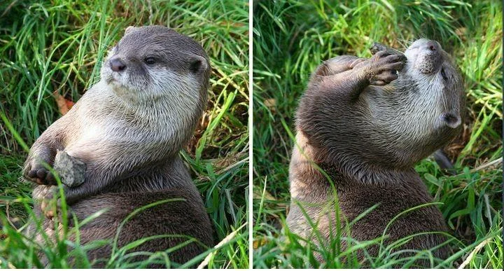

Species
Habitat
Fun Facts
Other Resources
Other Resources
Resource
Link
Wikipedia - Otters
https://en.wikipedia.org/wiki/Otter
Nat Geo - Otters
https://www.nationalgeographic.com/animals/mammals/facts/otters-1
US DOI
https://www.doi.gov/blog/12-facts-about-otters-sea-otter-awareness-week

An otter and its favorite rock.